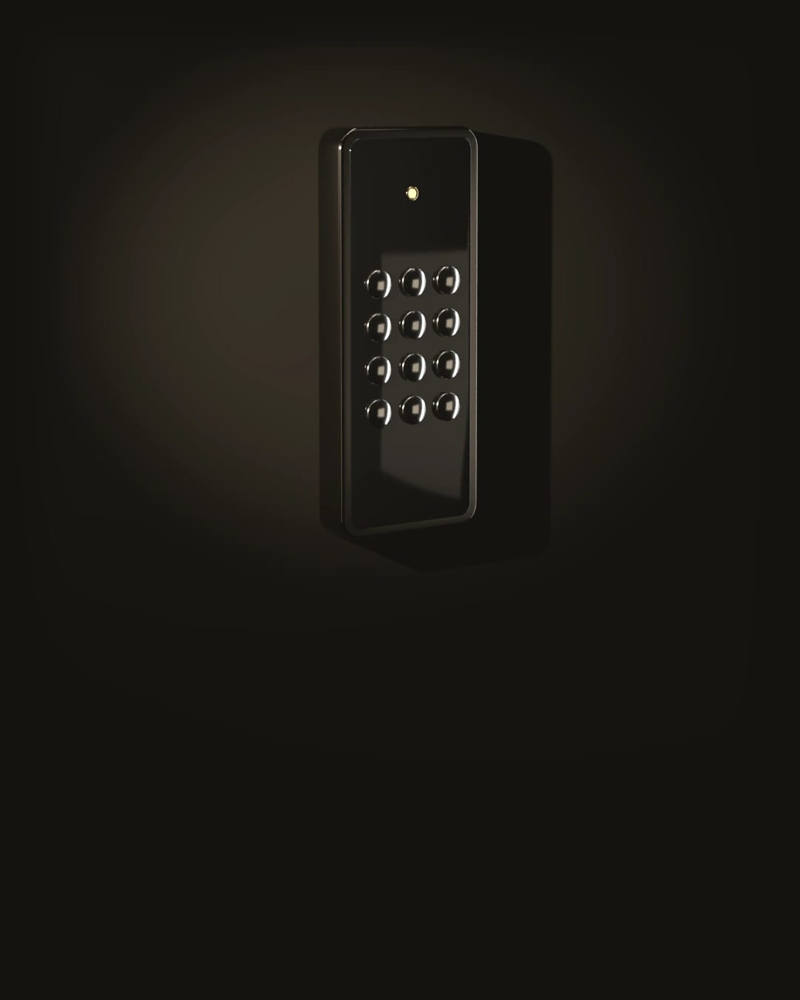
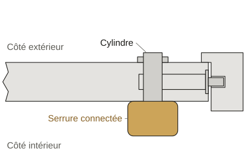
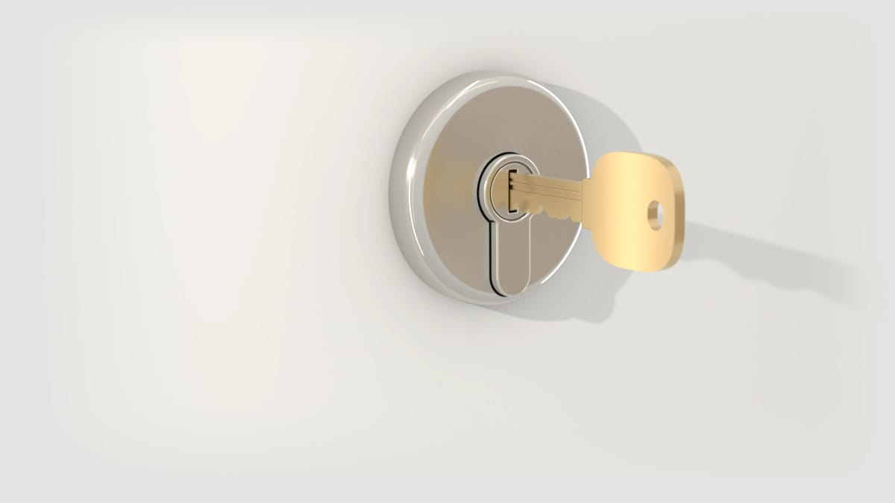

Poser une serrure connectée
Sur rendez-vous, avec un devis gratuit.
Pas encore partout en France : la liste des communes desservies est en bas de page.
Prendre rendez-vousOu appeler le [À CONFIRMER : numéro de téléphone]
Une serrure connectée change la façon d’ouvrir votre porte mais pas sa solidité, qui tient toujours au cylindre.
Avant de choisir un modèle
La plupart se posent côté intérieur, sur la serrure que vous avez déjà. Un petit moteur tourne la clé à votre place.
Il faut souvent un cylindre débrayable, qui s’ouvre de l’extérieur même quand une clé est engagée de l’autre côté.
En immeuble, le digicode et l’interphone du hall relèvent du syndic. Votre porte reste votre décision.
Nos serruriers posent des serrures à code. Le prix dépend du modèle : il figure sur le devis gratuit.

Ce que fait le serrurier

Vous décrivez votre porte et le modèle visé.
Une photo de la serrure côté intérieur aide. Rien n’oblige à avoir déjà choisi.
Le serrurier vérifie la porte et le cylindre.
Il vous dit si le modèle s’y adapte et vous remet un devis gratuit.
Un cylindre qui ne convient pas est chiffré à part.
Le devis porte alors deux lignes : la pose de la serrure et le cylindre neuf.
Il pose la serrure et la règle avec vous.
Il la relie à votre téléphone sur place.
Il vous montre l’ouverture de secours.
La clé ouvre encore le jour où les piles lâchent. Vous recevez ensuite la facture détaillée.
Si vous signez le devis chez vous, la loi vous laisse 14 jours pour changer d’avis (article L221-18 du Code de la consommation).
Ce que coûte la pose
Si vous ne donnez pas suite au devis, vous ne payez rien, pas même le déplacement.
Voir le barème complet-
Gratuits
La visite et le devis écrit, sur rendez-vous.
-
Sur devis
La serrure posée et réglée, plus un cylindre si votre porte en demande un.
Avant de faire poser une serrure connectée
Et si les piles sont vides ?
La plupart des modèles préviennent avant sur le téléphone ou par un voyant.
Si les piles s’épuisent quand même, la clé ouvre toujours la porte à condition d’avoir le bon cylindre.
Mon assurance accepte-t-elle une serrure connectée ?
Lisez ce que votre contrat demande pour la serrure et le cylindre. Une serrure connectée ne change rien à un cylindre A2P.
En cas de doute, posez la question à votre assureur avant la pose. C’est lui qui tranche.
Je suis locataire : puis-je en faire poser une ?
Si la pose demande de percer la porte ou de changer le cylindre, demandez d’abord l’accord écrit de votre propriétaire.
Gardez l’ancien cylindre pour votre départ.
Ma serrure connectée affiche une erreur : que faire ?
Le fabricant donne le sens de chaque code dans la notice ou dans l’application de la serrure.
Si vous êtes dehors et que la porte ne s’ouvre plus, appelez : c’est une ouverture de porte.

Prendre rendez‑vous pour une serrure connectée
Dites-nous le modèle si vous l’avez déjà choisi, votre commune et vos disponibilités. Une photo de la serrure côté intérieur aide à vérifier le cylindre avant la visite.
Prendre rendez-vousBloqué dehors à cause d’une panne : appelez le [À CONFIRMER : numéro de téléphone]